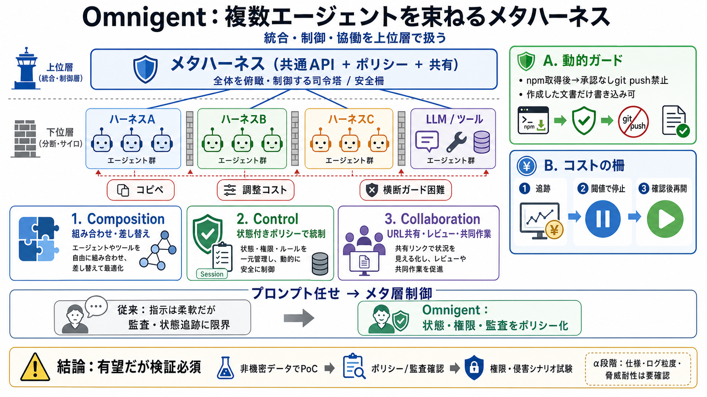

現象
入力・出力の手作業増

複数エージェントを束ねる
エージェントの「統合・制御・協働」を、ハーネスのサイロ問題を越えて可能にする上位層。
ハーネスが分断する
各ハーネスはインターフェースや制御方法が異なり、複数エージェントの並行運用でコピペや調整コストが増える。さらにセキュリティやコスト管理も横断しにくい。
上に“統合層”
ハーネス＝各チームの作業環境だとすると、メタハーネスは“進行管理と安全柵”を担当する共通の司令塔。モデルや実行方式が変わっても運用の層を維持する。
3つの上位機能
共通APIでエージェントをラップし、上位層で Composition（組み合わせ）・Control（状態付きポリシー）・Collaboration（共有/レビュー）を提供する。
例：状態で止める
セッション単位の状態を参照し、承認や権限に応じて行動を制限する。単純な allow/deny より“文脈に沿う”統制ができる。
運用プロセス化
LLMコストを追跡し、一定額ごとに一時停止して確認を挟める。コスト暴走を“運用の手順”に組み込む。
プロンプト任せ→制御へ
プロンプトでの“指示”は柔軟だが、監査性や状態追跡で限界が出やすい。Omnigentはメタ層ポリシーでガードレールを実装する。
安全に“隔離実行”
Modal や Daytona などの隔離実行（サンドボックス）により、安全に共同作業を回せる。OSアクセスの制限やネットワーク要求の扱いが鍵になる。
作業場所を統一
同じセッションをURL共有し、ビュー/コメント等でリアルタイムに協働できる方向性が示されている。Web/モバイル/Macアプリ/APIでも利用可能。
注目ポイント4本
結論：有望だが検証必須
方向性は有望（統合・統制・協働を運用課題として扱う）が、α段階のため監査ログ粒度やポリシー形式仕様、脅威耐性などは第三者評価/自社検証が必要。
出典の当たりどころ
メタハーネスは“上位層”であり、各ハーネス/SDKやモデルは下層。セキュリティはプロンプトより状態付きポリシーで統制し、α公開のため導入前検証が前提。
No references found